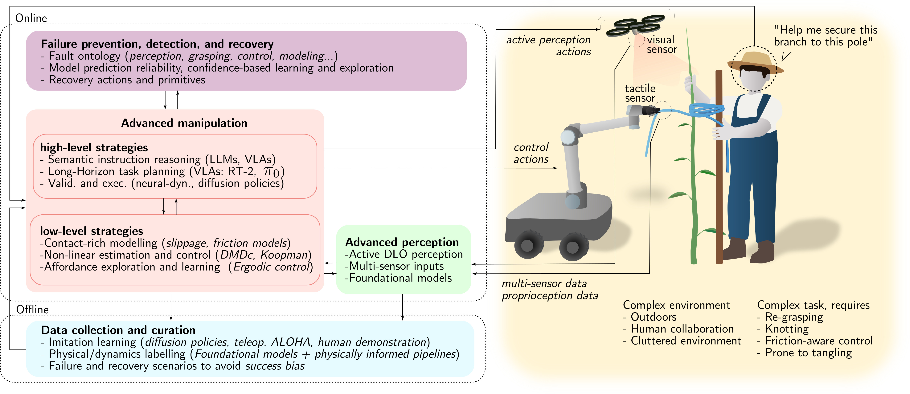

6 Discussion and Future Directions
Current DLO manipulation methods still struggle with generalization and robustness in the real world. For example, shaping techniques often assume contact-free environments, ignoring the elastoplastic behavior of real DLOs like electrical cables, and skip formal reachability analysis.Routing approaches frequently depend on task-specific motion primitives and are restricted to quasi-static, mostly planar environments, overlooking the complexities of clip-based interactions and long-term mechanical stress on the DLO. Topological manipulation is still dominated by passive visual perception, which performs poorly in the presence of dense entanglements and tight knots, resulting in frequent grasping failures and limited robustness. Most suturing approaches target isolated sub-tasks without offering robust end-to-end pipelines capable of managing tissue deformation, occlusions, and surface motion throughout the full procedure. Lastly, in transport, methods are typically validated in structured indoor settings and often assume pre-attached payloads, which limits their adaptability to outdoor or dynamic contexts.
Together, these limitations highlight the need for future research to address challenges across multiple fronts: advanced perception (Sec. 6.1), high-level and low-level manipulation strategies (Sec. 6.2), robust failure detection and recovery (Sec. 6.3), and scalable data collection and curation (Sec. 6.4). This broader perspective on next-generation DLO manipulation is reflected in the framework illustrated in Fig. 17, which is intended as a guiding example rather than an exhaustive architectural specification.

6.1 Advanced DLO Perception
Reliable DLO manipulation increasingly requires force, tactile, and proprioceptive feedback. Vision alone struggles with real-world lighting, reflections, occlusions, and the visually uniform, thin nature of many DLOs. Even in human manipulation, vision mainly guides initial grasp selection, while successful handling depends on touch, force feedback, and purposeful physical interaction. Interactive perception (Bohg et al., 2017; Weng et al., 2024), where the robot actively probes and manipulates the object to gain information, naturally complements passive sensing and enhances robustness. Additionally, advances in sensorless and tactile strategies, such as those proposed in (Monguzzi et al., 2023; Monguzzi et al., 2024), offer a promising path toward reliable, application-ready systems. While vision remains essential for grasp planning and state estimation, physical interaction sensing is a requisite for true application-ready systems.
Another issue is temporal resolution. Most methods reviewed here operate at low frequencies, restricting them to quasi-static tasks. Interestingly, this is also reflected in the manipulation tasks, usually exploiting quasi-static settings (see Sec. 6.2). Higher processing rates could simplify perception by minimizing inter-frame visual changes and enable dynamic manipulation. This requires optimizing current architectures or adopting new data sources, such as event cameras or reduced-order observers from force data.
Finally, DLO perception is usually task-specific, diverging from conventional setups that rely on large, general-purpose public datasets, like ImageNet (Deng et al., 2009). Foundation Models, pre-trained on extensive and diverse datasets, are increasingly being applied to robotic tasks (Firoozi et al., 2025). Their influence is now beginning to extend to DLO perception as well, for example through text-driven segmentation (Sun et al., 2024) or the digital-twin reconstruction pipeline proposed in (Jiang et al., 2025). The latter provides a compelling demonstration of foundation models-based DLO perception, reconstructing a physically accurate, simulation-ready digital twin of a real rope from sparse RGB-D video using pretrained foundation models in zero-shot settings. However, the object is intentionally thick, which simplifies 3D perception of DLOs and also mitigates the difficulty of current foundation models when dealing with DLO-like thin objects, e.g. under-representation in internet-scale data and difficulty with small-scale and thin details. Despite these limitations, research in this direction can substantially advance DLO perception by reducing reliance on task-specific data collection and manual annotation. Indeed, the strong generalization capabilities of foundation models can help bridge the real-world DLO variability gap and improve the robustness and adaptability of future DLO perception systems.
6.2 Manipulation of DLOs: What's Next
6.2.1 Adaptive and Contact-Rich Control in Unstructured Environments.
To move beyond quasi-static, fixed-grasp setups, the field must tackle contact-rich interactions like slippage, regrasping, and environmental friction. A critical barrier is the accurate modeling of hybrid stick-slip transitions. While recent soft robotics research has progressed by incorporating contact constraints into analytical models like Cosserat rods (Wiese et al., 2023; Jilani et al., 2025), these high-fidelity formulations remain inherently nonlinear and computationally intensive, often limiting their utility for robust, real-time control.
Data-driven nonlinear control offers a faster alternative. Techniques like the Koopman Operator and Dynamic Mode Decomposition with control (DMDc) (Brunton et al., 2016; Kaiser et al., 2021; Kaiser et al., 2018) can map complex DLO dynamics into linear observable spaces. Paired with Nonlinear Model Predictive Control (NMPC) (Korda and Mezić, 2020; Folkestad and Burdick, 2021), these methods can manage high-dimensional DLO systems at industrial speeds.
In unstructured environments, however, physical properties are often unknown. Active learning and ergodic exploration (Abraham et al., 2021; Saviolo et al., 2023) allow the system to autonomously probe the object, gauging stiffness or friction. This active data gathering enables online adjustments, such as controlled sliding or regrasping.
Validating these complex behaviors requires standardized hardware benchmarks like the (NIST, 2025) task boards (Luo et al., 2025; Qi et al., 2026) and shift from binary success criteria to continuous performance metrics (Laezza et al., 2021).
Lastly, human-robot collaboration with DLOs (Zhou et al., 2024) demands dexterity that quasi-static methods cannot provide. Adapting to human movements requires the robot to safely slip, regrasp (Zhaole et al., 2024), and manage varying grasp orientations (Yu et al., 2024).
6.2.2 Long-Horizon Planning and Foundational Intelligence.
Complex DLO tasks require reasoning that inter-relate high-level semantic understanding with low-level physical interactions. While vision-language-action (VLA) models like \(\pi_0\) (Black et al., 2024) and RT-2 (Zitkovich et al., 2023) are promising, their precision in DLO manipulation is unproven. A safer approach decouples reasoning from execution (Qi et al., 2026): Large Language Models (LLMs) generate symbolic sub-goals (e.g., "grasp the cable end"), which physics-aware planners then execute.
Validating these symbolic plans requires accurate deformation modeling to cross the sim-to-real gap. Physics-informed methods like PhysTwin (Jiang et al., 2025) and Particle-Grid Neural Dynamics (Zhang et al., 2025) learn deformable physics directly from RGB-D video. By building simulation-ready digital twins, these methods let planners verify long-horizon sequences using real-world physics priors instead of manually tuned simulators (Xiang et al., 2025).
Finally, executing these plans requires policies that handle complex, multimodal actions. Diffusion policies (Chi et al., 2025) are highly effective here, but their success depends on in-domain data. The scarcity of datasets capturing the full physical state-space of DLOs remains a severe bottleneck (see Sec. 6.4).
6.3 Fault Prevention, Detection and Recovery
For real-world deployment, fault detection and recovery must be a core system capability, not an afterthought. Research should start by establishing a fault ontology for DLOs, categorizing failures across perception (occlusion, tracking loss), grasping (slippage), control (instability), and modeling (parameter mismatch). Some work has begun here: (Mitrano et al., 2021) predicts the reliability of learned DLO models, and (Sundaresan et al., 2021) provides recovery strategies for tangled DLOs.
Because learning-based methods struggle with out-of-distribution events, integrating uncertainty estimation (Amini et al., 2020; Kendall and Gal, 2017) is vital for detecting impending failures. Similarly, during online adaptation, incorporating ergodic exploration from equilibrium with stability guarantees (Abraham et al., 2021) can actively enhance failure avoidance during system exploration.
Developing dynamic primitives for fault recovery is another critical area. Humans resolve tangles using dynamic motions like impulsive pulls or whipping. While some primitive-based untangling exists (Zhang et al., 2022), formalizing these into a taxonomy would give supervisors (like VLMs in the RACER framework (Dai et al., 2025)) the vocabulary to command complex, high-frequency maneuvers to fix entanglements. Multi-robot strategies (Herguedas et al., 2019; Aranda et al., 2025) can also mitigate local failures, using physical cues (like tension along a cable) to coordinate recovery when communication is poor.
6.4 Data Collection and Curation Challenges
Recent advances in imitation learning, particularly using Diffusion policies (Chi et al., 2025), have shown that model-free approaches can master complex skills with relatively few demonstrations. Teleoperation frameworks like ALOHA (Zhao et al., 2025; Tony Z. Zhao AND Vikash Kumar AND Sergey Levine AND Chelsea Finn, 2023) can enable the learning of precise DLO-related tasks—such as cable routing or shoe lacing—given sufficient demonstrations. Complementing these hardware-intensive approaches, the Universal Manipulation Interface (UMI) provides a scalable alternative by leveraging in-the-wild human demonstrations through hand-held grippers (Chi et al., 2024). Further reducing hardware requirements, human video-based learning methods directly translate RGB-D videos into robot supervision (Marion Lepert et al., 2025). However, a critical bias limits the utility of these general-purpose data-collection pipelines. Since large-scale datasets naturally lean toward conventional, easy-to-record scenarios, it systematically underrepresents challenging environments (such as underwater cable inspection or highly congested DMLO routing) precisely where automation offers great value. As a result, these models often fail to generalize to DLOs with different physical properties, necessitating ad-hoc data collection for new materials or environmental variations.
One of the main causes of this poor generalization is that DLO dynamics are governed by latent physical properties (such as stiffness and friction) that are often visually imperceptible. To enable robust generalization, data collection must pivot toward multimodal pipelines, synchronizing visual kinematics with high-frequency force and tactile feedback to resolve these invisible parameters. Novel hardware approaches, such as sensorized hydrogels (Hardman et al., 2021), offer a promising avenue for dataset generation by directly capturing mechanical deformation both internally and at the contact surface of the DLO. Alternatively, emerging foundation models address the physical annotation bottleneck computationally. By combining dense point tracking from models like CoTracker3 (Karaev et al., 2024) with physically-informed pipelines like PhysTwin (Jiang et al., 2025), it becomes possible to semi-automate labeling in the wild, effectively creating valid generators for dense, physics-informed datasets.
Finally, current datasets suffer from a ``success bias,'' as they consist almost exclusively of smooth expert demonstrations. Robust DLO manipulation, however, requires recovering from inherent instability and failure modes like snagging or entanglement. Because experts naturally avoid these errors, models trained on such data lack the support to handle out-of-distribution failures. Future datasets must therefore explicitly include failure and recovery trajectories, teaching the policy not only the nominal path but also how to untangle or re-route when the primary strategy fails.